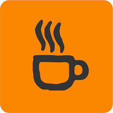

html
Est utilisé dans le but de concevoir et de créer des pages Web, car on peut dire que c'est la structure principale des pages Web et de leur infrastructure. Il fournit une description détaillée de la façon dont le contenu du site Web sera affiché en le divisant en un titre et des paragraphes, le tout basé sur ce que Tags.
css
Est le format de langue pour les pages web sont intéressés par la conception de sites Web, spécialement conçu pour isoler le formatage (couleurs - lignes - boutons. ...) pour le contenu du document écrit (dans une langue telle que HTML) et s’applique aux couleurs, aux polices de caractères, aux images et aux arrière-plans utilisés dans les pages, avec souplesse et facilité.
| logo | Nom de logiciel | description |
|---|---|---|
 |
Notepad++ |
un éditeur web gratuit en C++. Son UI est entièrement personnalisable et les utilisateurs peuvent décider quels éléments syntaxiques sont surlignés et développés. |
 |
sublime text 3 |
un éditeur de texte générique codé en C++ et Python, disponible sur Windows, Mac et Linux. |
|  | CoffeeCup |
Avec CoffeeCup, vous pouvez créer des fichiers HTML et CSS et éditer des fichiers web existants. Vous pouvez aussi mettre à jour votre contenu grâce à sa librairie d’éléments. |
 |
NetBeans |
une IDE open source qui peut vous aider à développer en HTML5, en PHP, en JavaScript, en C++ et dans plusieurs autres langages. |
Aptana Studio 3 |
un IDE open source personnalisable. Il permet d’éditer les codes écrits en HTML5, CSS, JavaScript, PHP, Ruby, Rails et Python. |